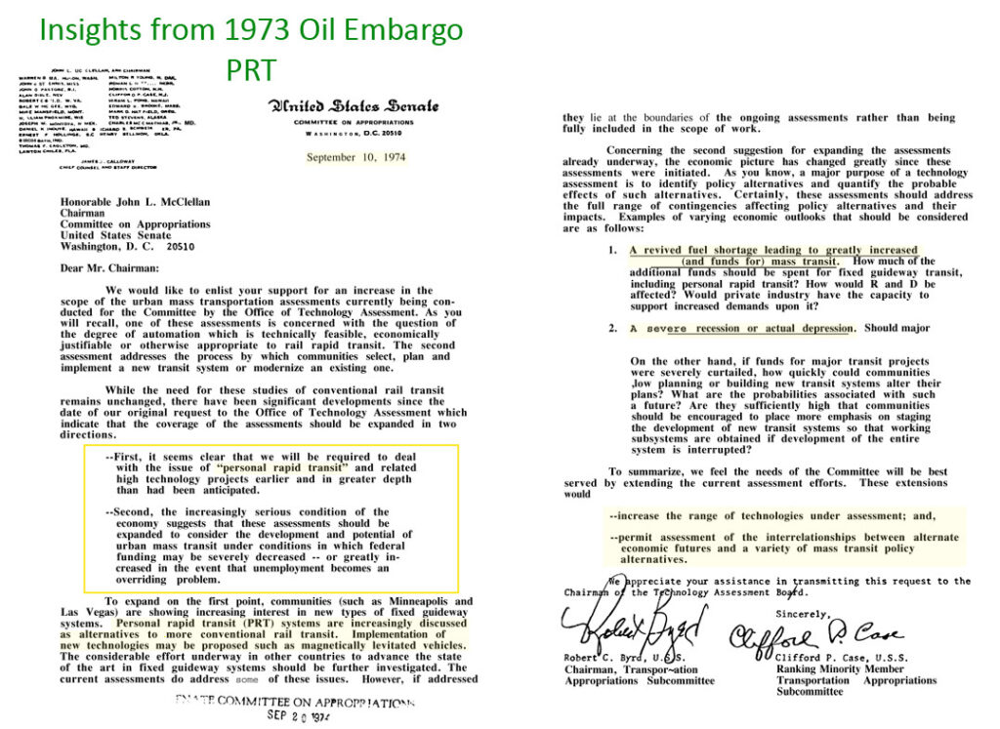
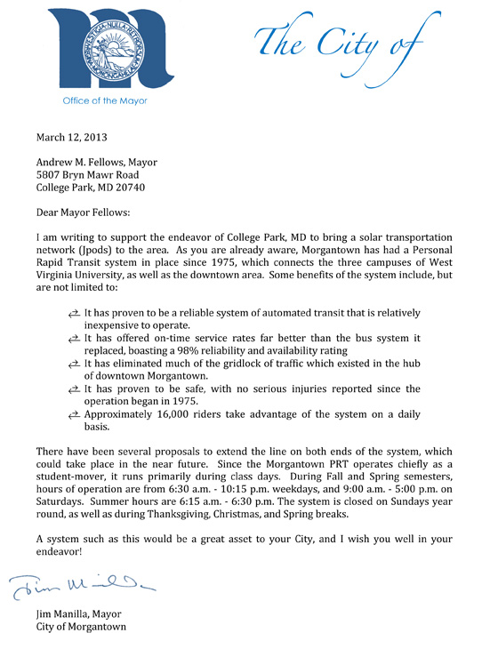

The Constitutional Convention voted 8 states to 3 to forbid federal highways. 21 presidents vetoed them. 10 presidents warned of oil addiction. 34 state constitutions forbid transportation monopolies. Yet DOTs keep building.
The Constitutional Convention voted 8 states to 3 to forbid federal highways. 21 presidential veto messages enforced divided sovereignty forbidding federal highways. 10 presidents declared foreign oil addiction caused by federal highways a direct threat to national security. 34 state constitutions specifically forbid transportation monopolies. Yet DOTs continue to build highways despite oil wars and climate change.
Nine presidents over 50 years vetoed federal road and canal bills on constitutional grounds. These are not opinions — they are official acts of constitutional enforcement.
"…pledges funds 'for constructing roads and canals' does not appear that the power proposed to be exercised by the bill is among the enumerated powers."
"Sovereignty for all the purposes of internal improvement…is said to be derived: First, from the right to establish post-offices and post-roads; second, from the right to declare war; third, to regulate commerce; fourth, to pay the debts and provide for the common defense and general welfare; fifth, from the power to make all laws necessary and proper… According to my judgment it can not be derived from either of those powers, nor from all of them united, and in consequence it does not exist."
"It does not, in my opinion, possess it; and no bill, therefore, which admits it can receive my official sanction."
"I cannot but regard the bill as asserting the right to apply the funds and credit of the Federal Government to works of internal improvement of a local character."
"Many of the works provided for by the bill are, in my opinion, wholly local in their character, and it appears to me that the local interests which are sought to be promoted might be more appropriately, as well as more justly, provided for by the States immediately interested."
"I can find no authority in the Constitution for making appropriations of the public money for such purposes, and I cannot approve a bill which in my judgment violates that instrument."
"The practice of the Government has been far from uniform on this subject, but I might refer to a large number of acts to show that the attention of Congress has been constantly turned to the local interests and convenience of certain ports."
"Among the powers expressly granted to Congress by the Constitution, there is no one which authorizes appropriations from the Treasury for internal improvements, for the purposes of commerce or otherwise, within the limits of a State."
"And Mr. Madison, in his veto message of the 3d March, 1817, declares that — 'The power to regulate commerce among the several States can not include a power to construct roads and canals.' What a vast field would the exercise of this power open for jobbing and corruption!"
"The Constitution does not expressly give Congress the power to make appropriations for purposes of this kind, and I am not aware that it possesses such power unless by implication."
Source: Climate Change Root Cause: Unconstitutional Federal Highways by Bill James (2023, ISBN 9798879103052). Full text of all 21 veto messages at postroads.com/vetoes.
Every president from Nixon to Biden warned that foreign oil dependence — caused by federal highway policy — is a direct threat to national security. None ended it. American soldiers have been trading blood to buy time since 1990.
"At the end of this decade, in the year 1980, the United States will not be dependent on any other country for the energy we need. We will hold our future in our hands alone."
"First, we must reduce oil imports by 1 million barrels per day by the end of this year and by 2 million barrels per day by the end of 1977. Second, we must end vulnerability to economic disruption by foreign suppliers by 1985."
"This intolerable dependence on foreign oil threatens our economic independence and the very security of our Nation. The energy crisis is real. It is worldwide. It is a clear and present danger to our Nation. These are facts and we simply must face them."
"While conservation is worthy in itself, the best answer is to try to make us independent of outside sources to the greatest extent possible for our energy."
"There is no security for the United States in further dependence on foreign oil."
"The nation's growing reliance on imports of oil…threatens the nation's security…[we] will continue efforts to…enhance domestic energy production."
"Keeping America competitive requires affordable energy. Here we have a serious problem. America is addicted to oil, which is often imported from unstable parts of the world."
"For decades we have known that the days of cheap and easily accessible oil were numbered…"
"We will become, and stay, totally independent of any need to import energy from the OPEC cartel or any nations hostile to our interests."
"This crisis is a stark reminder: To protect our economy over the long term, we need to become energy independent. I've had numerous conversations over the last three months with our European friends of how they have to wean themselves off of Russian oil. It's just not tenable. It should motivate us to accelerate the transition to clean energy."
American soldiers have been trading blood to buy time for US governments to end foreign oil addiction since 1990. Ten presidents promised. None delivered. The federal highway system that created the addiction is still being expanded.
Source: Climate Change Root Cause by Bill James. Oil import percentages from EIA Annual Energy Review.
Article I, Section 8: Enumerated limit of "post Roads" — only if no other means exists for letters to be delivered in defense of free speech.
Article I, Section 9: "No Preference" in facilities of commerce of one state over another.
Preamble: Federal government may only promote (not provide) general welfare.
Federalist #45 (Madison): "The powers delegated by the proposed Constitution to the federal government are few and defined… The powers reserved to the several States will extend to all the objects which, in the ordinary course of affairs, concern the lives, liberties, and properties of the people."
Madison, Monroe, Jackson, Tyler, Polk, Fillmore, Pierce, Buchanan, and Johnson all vetoed federal road and canal bills on constitutional grounds. They understood that mixing federal war-powers with commercial self-interest rebuilds the path to war the Revolution was fought to end.
34 state constitutions specifically forbid transportation monopolies:
• Oklahoma: "Perpetuities and monopolies are contrary to the genius of a free government, and shall never be allowed."
• Texas: same language
• Maryland: "monopolies are odious, contrary to the spirit of a free government"
The Federal-Aid Highway Act of 1916 mandated burning 2 tons of steel to move one person. It made American cities unwalkable. It created foreign oil addiction (US Peak Oil was 1970). It funded oil-dollar terrorism and triggered oil wars since 1991. It imposed $36 trillion in national debt on children who cannot vote. NASA confirmed: "Road Transportation Emerges as Key Driver of Warming." Even Eisenhower, who signed the 1956 Act, said the result was never his intent:
"The matter of running Interstate routes through the congested parts of the cities was entirely against his original concept and wishes; that he never anticipated that the program would turn out this way. He pointed out that when the Clay Committee Report was rendered, he had studied it carefully, and that he was certainly not aware of any concept of using the program to build up an extensive intra-city route network as part of the program he sponsored. He added that those who had not advised him that such was being done, and those who had steered the program in such a direction, had not followed his wishes."
Privately funded networks, 5× more efficient than roads, granted rights-of-way for 5% of gross revenues. State-governed, not federally controlled. No taxpayer money. No bonds. No sovereign immunity. Every injury faces a jury. This is what the Framers intended — internal improvements governed by the states, funded by private capital, accountable to the people.
Source: Climate Change Root Cause: Unconstitutional Federal Highways by Bill James (2023, ISBN 9798879103052)
Congressional Study PB-244854, "Automated Guideway Transit," was published in 1975 to find solutions to traffic problems and the hardships of the 1973 Oil Embargo. The solution was found. Government blocked it.
"Government 'institutional failures' blocked urban transportation innovation for 'four to six decades (aside from some relatively minor cosmetic changes)'… Compared with many other areas of entrepreneurial endeavor, the environment for innovation in transportation should be favorable. Urban transportation needs are extensive… In retrospect, the new systems efforts have served not to stimulate interest in new technology but to discourage already reluctant local transit operators from considering it."
"PRT can provide a very much higher level of service than other modes of public transportation… PRT systems would attract a significant percentage of the rides now being made in private automobiles and offer obvious benefits:"
• Less traffic congestion in urban areas
• Less land and fewer facilities used for automobile storage
• Reduced travel time under more comfortable circumstances
• Less noise and air pollution
• Reduction in consumption of petroleum-derived fuels
• Reduction in requirements for new arterial roads and urban freeways
• Greater mobility for the transportation disadvantaged — the young, the elderly, the poor, and the handicapped
No serious injuries reported since President Nixon's daughter opened the network on Oct 24, 1972. Her statement: "More fun than Disneyland." 150 million+ trips. Grade-separated. Self-driving decades before Tesla. The technology is proven. The safety record is unmatched.
The Wuppertal suspended railway in Germany has carried 25 million passengers per year since 1901. One fatal crash in 124 years. Grade-separated transit is not experimental — it has been operating safely for over a century.
Congress identified PRT as the solution to oil dependency, traffic congestion, pollution, and inequity. The Morgantown PRT had already been operating since 1972 — proving the technology worked. The Congressional study documented everything needed to scale it nationally.
The study's own finding explains why: government "institutional failures." The same DOTs protected by sovereign immunity blocked the alternative that would have made them accountable. The study predicted this — "new systems efforts have served not to stimulate interest…but to discourage." Fifty-one years of discouragement. 40,000 deaths per year. Every year, the council members who maintain the status quo choose the roadkills over the proven alternative.


The Framers, 9 presidents, and 34 state constitutions said no. The alternative has worked since 1972. What is your city council's excuse?